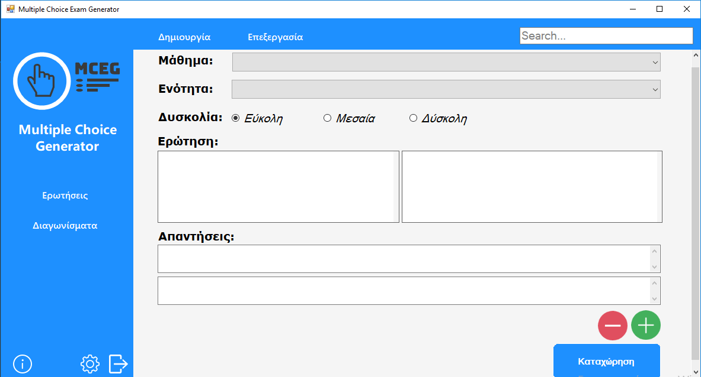

Multiple Choice Exam Generator
Το Multiple Choice Exam Generator (MCEG) είναι ένα ελεύθερο λογισμικό στο οποίο μπορείτε να δημιουργήσετε τις δικές σας ερωτήσεις και να τις εξάγετε αυτόματα ή χειροκίνητα, δημιουργώντας ένα διαγώνισμα.
Διαθέσιμο για Windows